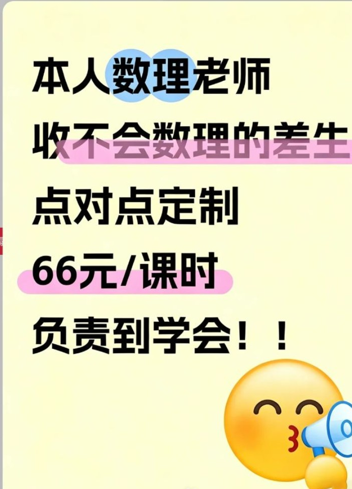
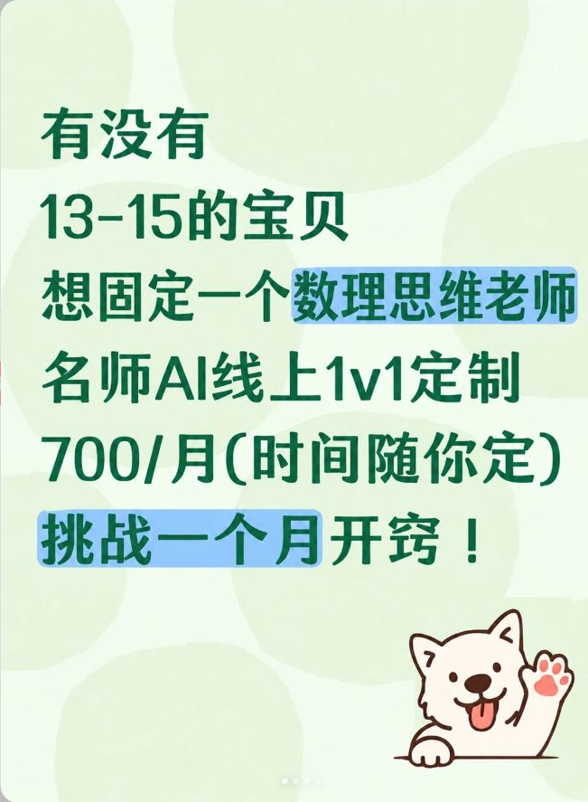

CUI
/
WORKSPACE
/
CONTENT ARCHIVE
返回工作台 ↗
02 / CONTENT RESEARCH
从被看见，
到愿意留资。
两份真实内容档案，探索不同的运营成果。
SELECTED WORKS · 2026
CASE 01 / 转化案例

CUI / ARCHIVE 01
01 · 最高留资
轻触这份档案，查看真实笔记
01 / 业务成果
680+
单篇留资
真实案例 · 内容制作于实习期间

02 / 下一份档案
绿色带狗
最高曝光笔记
切换查看
↗
一起打开这份内容
↗
CASE 01 · 真实笔记
和 CUI 拆解这篇笔记 →
关闭 ×
封面
正文与互动
完整原图
放大 +